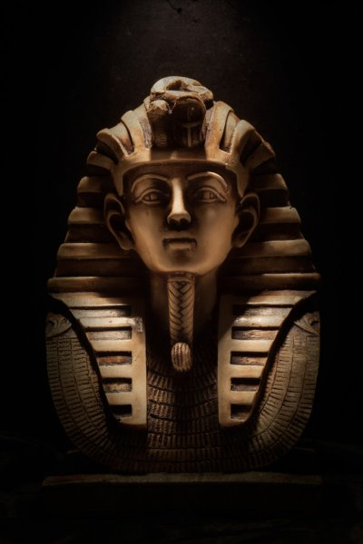
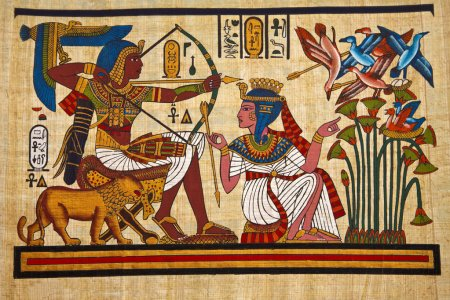
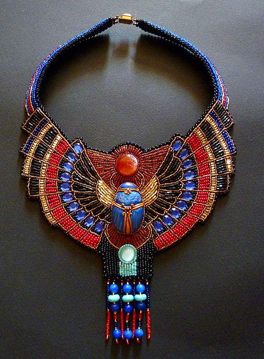
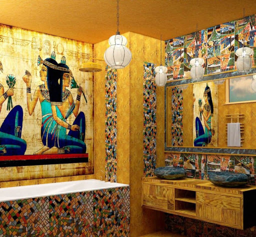
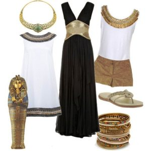

Культура — это разносторонний и в то же время целостный мир, созданный человеческой деятельностью. За века и тысячелетия накопились огромные материальные и духовные богатства. Они принадлежат всему человечеству. Каждое новое поколение, вступая в жизнь, застает созданный предыдущими поколениями мир, включается в него, вбирает его в себя и живет, опираясь на то, что было создано раньше, до его появления. Что-то из культурных ценностей, исполнив свое назначение, ушло из жизни и стерлось в памяти людей. Но появилось новое, возникшее на его основе. Что-то продолжает жить в веках и служить человечеству. Культурные явления, казалось бы, отжившие свое время и забытые, вдруг обретают вторую жизнь и начинают активно влиять на культуру нового времени, а иногда и входят в нее. ВЛИЯНИЕ египетской культуры - прямое и косвенное - на нашу современную культуру обнаруживается на каждом шагу. Прислушайтесь к разговорам взрослых, к сводкам новостей, даже к надоедливой рекламе: "У неё шея, как у Нефертити", "Там у них вавилонское столпотворение!". И это только то, что у всех на слуху. Начитанный человек продолжит список. Он вспомнит и "валтасаров пир", и "загадочных сфинксов", и "крылатых ангелов", и многое другое. Целью данной статьи является ответ на вопрос: «Продолжает ли оказывать влияние египетская культура на современный мир, можем ли мы в нашей повседневной жизни найти следы древней мировой культуры». Актуальность работы заключается в том, что в условиях современного общества усиливается роль культуры и искусства, это важные механизмы саморазвития и самопознания человека. В культуре прошлого заложены материальные, духовные, эстетические ценности, которые нашли своё отражение и в культуре современного мира. Статью можно использовать на уроках МХК, классных часах, элективных занятиях, технологии.
На протяжении существования культуры каждая эпоха наделяла искусство неповторимой миссией. Искусство Древнего Египта до сих пор манит и будоражит умы современных мастеров. Чудесные росписи по ткани, резьба по дереву и кости, мозаика, витражи, золотые и серебряные украшения. Фаянсовые и фарфоровые произведения искусства, изделия из различных видов металла и драгоценных камней – искусство Египта не перестает удивлять людей современности, достигших вершин в науке, технике и, казалось бы, пресыщенных самыми разнообразными видами искусства. Искусство Древнего Египта создавать монументальные скульптуры, вручную возводить такие пирамиды, что сквозь столетия и тысячелетия пронесли они свою мощь и величие, поражает и восхищает и сейчас.
Искусство Египта – одна из величайших культур стран Древнего Востока, именно оно заложило основы для развития десятков других культур и прогрессивных обществ. Даже сегодня можно проследить связь культуры нынешних высокоразвитых стран и древневосточных, в некоторых из них сквозит явное искусство Египта, его влияние слишком велико.
Несомненно, Египет был величайшим государством с точки зрения политического строя, общественного уклада, военных достижений. И все же – именно искусство Древнего Египта подчеркивает величие этой могущественной державы, чье наследие дошло до наших времен.
Именно своеобразная религиозная направленность дала основания древнеегипетскому искусству пополняться такими образцами культуры и, пройдя сквозь столько времени, оказывать влияние на искусство современности многих стран и народов.

Египетский стиль – это один из самых древних стилей. Он положил начало множеству других, схожих с ним, но по-прежнему оставался уникальным в своём роде. Свои черты египетский стиль приобретал изначально исключительно в архитектуре и живописи, но постепенно распространился в самые различные области культуры, например, в декоративно-прикладное искусство. Главными сюжетами египетского стиля в живописи становятся мифологические и героические сцены, а также сцены, основанные на реальных событиях. Главной особенностью египетского стиля стала высочайшая функциональность и комфортабельность интерьера помещений, плавность и графичность расписных узоров, а также декоративность, которая, несмотря ни на что, всегда оставалась одной из отличительных особенностей этого стиля. А стремление египтян к заполнению пустого пространства рисунком лишь подчеркивает его уникальность и своеобразие, что не свойственно ни одному другому стилю на всей планете за всю историю её существования. Египетский стиль - это уникальное сочетание гармоничности и непосредственности, объединение уникального сюжета и плавности линий.
Египетский стиль в дизайне украшений

Древние египетские украшения поначалу изготавливались из рога или камня, так как в то время, когда эти изделия создавались, люди еще не добывали металл. Позже начали изготавливаться драгоценные изделия из золота, серебра, а также из бронзы и меди. Ремесленники изготавливали изысканные и неповторимые образцы. Египетские украшения экспортировались во многие страны древнего мира и очень высоко ценились в то время. Во времена Древнего Египта украшения в качестве талисманов носили как женщины, так и мужчины. Многих хоронили вместе с их ценностями, которые использовались при жизни, в том числе и с ювелирными изделиями. Особенно распространенными в те времена были кольца-печатки, широкие браслеты, а также кулоны, колье, серьги и подвески. Браслеты носили не только на руках, но и на лодыжках. Также пользовалось популярностью египетское украшение на шею, которое могло также облегать плечи и грудь. Такое изделие называется "пектораль". По поверьям, оно призвано было защищать сердце, в котором находится душа. Часто на пекторалях изображались символы самого сердца, а также другие знаки, олицетворяющие жизнь и власть. Кроме того, люди из знатного рода носили диадемы, украшенные драгоценными камнями и тонкими узорами. Египетские украшения очень часто были украшены драгоценными камнями, самыми распространенными из которых были бирюза, оникс, лазурит, аметист, опал, гранат. Эти минералы также часто присутствовали в отделке дорогой одежды, поясов и других изделий. Бирюза символизировала радость, лазурит — милосердие, а камни красного цвета — власть. Наиболее распространенным символом в Древнем Египте был уджат, который изображался в виде продолговатого глаза. Он символизировал защиту и исцеление. Его часто рисовали на гробницах для защиты души умершего. Анкх — символ вечной жизни. Изображался в виде креста с кольцом наверху. Этот знак остается очень популярным в современности, чаще всего он используется в кулонах. В современном мире многие древние ювелирные изделия завораживают взгляд посетителей музеев. И многие производители украшений стараются подражать стилю древних мастеров, создавая элегантные украшения в египетском стиле. В наше время можно встретить ювелирные изделия или бижутерию, которая украшена древними символами. Египетские украшения сейчас очень популярны. Это неудивительно, так как такие оригинальные аксессуары дополнят любой, даже самый изысканный образ. В наше время также распространены изделия, которые являются копиями древних украшений, найденных археологами при раскопках. Одним из наиболее популярных украшений в египетском стиле является браслет, который содержит драгоценные камни: оникс, лазурит, бирюзу и другие.
Египетский стиль в дизайне интерьера

Для египетской архитектуры характерны внутренние колонны до потолка, арки, полуколонны, ниши. Стены часто украшены фресками и росписью. В декоре обязательно присутствуют элементы, являющиеся символичными для египетской культуры: например, пирамиды, сфинксы, солнце, лотос и т.п. Цвета яркие, однако, цветовая гамма интерьеров весьма ограничена. Стены, как правило, имеют нейтральный цвет: желтоватый, бежевый, песочный, слоновой кости. В египетских интерьерах часто можно обнаружить большое количество различных оттенков оранжевого. Много цвета золота, который сочетают с темно-коричневым, шоколадным, черным, а также с синим, зеленым. Синий цвет в египетских интерьерах, как и в помещениях в марокканском стиле, часто используется для отделки потолка. В Египте много домов с полностью белыми стенами внутри, ведь белый цвет – охлаждающий и освежающий, что актуально для жаркого египетского климата. Еще одна особенность интерьеров в египетском стиле – ковры на полу и обилие текстиля. Вообще, интерьеры в египетском стиле имеют много общего с марокканскими интерьерами: та же узорность, витиеватость, обилие текстиля. Но египетский стиль интерьера отличает наличие геометричных орнаментов, не характерных для марокканского стиля, и древнеегипетская символика. Цветные скульптуры, барельефы, роспись и мозаика, резьба и инкрустированная мебель – все с использованием египетской символики воссоздадут в современном интерьере дух древней эпохи. Роспись стен и текстиль содержат характерный египетский орнамент, в котором строгая геометричность полос и зигзагов соседствует с изящными силуэтами лотосов и изгибами, подобными виноградной лозе. Изюминка интерьера – украшения в виде головы сфинкса, змея-уреуса, жука-скарабея, ястреба с распростертыми крыльями. Довершат облик большие светильники и стебли папируса и тростника в напольных керамических вазах. В наше время стилизованная посуда и утварь, картины на папирусе, фигурки животных, напольные вазы также послужат элементами создания интерьера в египетском стиле. Мебель египетского стиля – это ларцы и шкатулки черного дерева, инкрустированные слоновой костью, зеленым и синим малахитом, бирюзой и лазуритом, табуреты с ножками в виде копыт животных, вырезанными из целых слоновьих клыков. Цвет мебели – темный, материал – черное дерево, тис, кедр. В отделке мебели египтяне часто применяли и яркие, чистые краски, характерные той эпохи. В качестве напольного покрытия богатые древние египтяне использовали мрамор, каменные и даже золотые и серебряные плиты. Современные материалы позволяют без особых затрат имитировать древнюю роскошь. Уместны на полу и ковры с египетским орнаментом, и тростниковые циновки. Характерные приметы египетского интерьера – массивные колонны, капители которых похожи на бутон или ствол пальмы, ниши, сглаженные углы. Арки своеобразной формы, украшенные резьбой или росписью, вместо дверных проемов или массивные кедровые двери с инкрустацией, резные карнизы, оконный текстиль с египетским орнаментом или иероглифами дополнят характерные приметы стиля.
Египетский стиль в дизайне одежды

На протяжении тысячелетий египтяне следовали традиционному стилю — внешний вид одежды практически не изменялся, а наряды сохраняли точный крой и изящную декоративную отделку. Египетский этнический стиль в одежде отличается прямыми линиями кроя. В фасонах прослеживаются геометрические фигуры – треугольник, прямоугольник, трапеция. Египетская мода тех лет основывалась на ярких контрастных украшениях и однотонной ткани. Одежда древних египтян продумана до мелочей — в ней отсутствуют лишние детали, а наряды поражают своей красотой и практичностью.
Особое внимание египтяне уделяли материалам, украшениям и декоративной отделке одежды, которая символизировала, к какому классу относится их владелец - по внешнему виду легко определялась принадлежность к элите или к низшим слоям населения. Головные уборы, обувь и одежду жёлтого, голубого и коричневого цвета разрешалось носить только аристократам. Лен — основной материал, который использовался для изготовления новой одежды. Хорошие климатические условия позволяли выращивать лен в течение всего года, и мастерство ткачей достигло абсолютного совершенства: роскошные полотна Древнего Египта стали известны во всем мире, а тонкий египетский лен стал главным конкурентом восточного шелка. Белоснежные схенти из ткани, которую оборачивали вокруг бедер и укрепляли на талии поясом, украшались различными этническими узорами.
Женские наряды «каласирис» Древнего Египта создавались из тонкого полотна и были точно сшиты по фигуре, облегая женское тело, как футляр. Со временем древнеегипетские умельцы начали изготавливать каласирисы из тонкой овечьей шерсти. Наряд египтянки из высшего сословия состоял из юбки и жилета, которые зрительно вытягивали фигуру. Узкая юбка длиной до половины икры заставляла египтянок делать маленькие семенящие шажки и их походка на протяжении тысячелетий всегда оставалась удивительно женственной и грациозной. В каласирисе знатных дам присутствовала вышивка и плиссировка, а жилет с бретельками, завязанный на плечах, демонстрировал окружающим их обнаженную грудь. Простые египетские труженицы облачались в закрытые длинные рубашки на бретельках, которые начинались под линией груди. Для того чтобы подчеркнуть этнические мотивы Древнего Египта, современным модницам необязательно четко следовать всем канонам египетского стиля. Достаточно нескольких элементов.
Для повседневной одежды актуально свободное платье из струящейся такни, которое можно сочетать с оригинальными браслетами в египетском стиле, а линию талии подчеркнуть широким поясом с геометрическими узорами. Брюки свободного кроя и легкую тунику дополнить широким платком, соорудив из него на голове подобие чалмы. Для вечернего туалета подойдёт образ загадочной египтянки, который поможет создать и характерный макияж с четко прорисованной линией губ и ярко обведенными глазами в стиле царицы Клеопатры. Вариантом вечернего наряда в египетском стиле является однотонное платье, подчеркивающее фигуру, украшенное вышивкой или стразами в виде геометрических фигур. В качестве аксессуаров прекрасно подойдут ножные или ручные браслеты, ожерелье или бусы. В настоящее время модельеры уделяют много внимания данному направлению.
В коллекциях современных дизайнеров присутствуют наряды, выполненные по канонам Древнего Египта: прямые формы, четкий геометрический рисунок, изящная драпировка, стильные украшения. Сегодня самые узнаваемые элементы египетского стиля одежды – это плащ, который завязывается на груди, обнажая одно плечо, и облегающий длинный сарафан на тонких бретелях. В основе фасонов одежды в египетском стиле всегда лежат геометрические фигуры. Как правило, прямоугольник или трапеция. И это очень на руку современным модницам: геометрические принты выравнивают пропорции фигуры и делают силуэт изящным, визуально увеличивая рост. Этим преимуществом геометрии пользуются при создании моделей такие дизайнеры, как Донна Каран, Живанши, Антонии Маррас и Эмилио Пуччи. Несмотря на простоту, геометрические принты смотрятся очень необычно и стильно, а за счет удачного сочетания фигур и цветов можно зрительно сузить талию и выгодно подчеркнуть линию груди. Декоративные элементы могут быть выполнены в форме круга или пирамиды. Наиболее типичные цвета: бирюзовый, белый, красный, темно-синий. Традиционные египетские наряды никогда не бывают короткими, но современные модельеры сочетают в одном комплекте несколько трендов, поэтому на подиуме легко можно увидеть короткое платье или мини-юбку в египетском стиле.
Заключение
Влияние элементов древних культур на современную реальность очевидно. Образы древней культуры проявляются в искусстве и культуре современной цивилизации повсеместно, потому как невозможно построить собственную традиционную культуру без фундамента древних традиций. Это, своего рода, опыт человечества, накопленный веками, который претерпевал постоянные видоизменения. Так ни одна из культур не может развиваться обособленно, идет взаимообмен не только между культурными общностями, но и между культурными слоями. Кроме того, всегда наблюдался интерес к древности с точки зрения копирования художественных форм, внедрения древних стилей в дизайне помещений, архитектурных форм, дизайне украшений и дизайне одежды. Таким образом, потребность в элементах древних культур остаётся актуальной и сегодня.